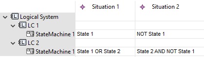
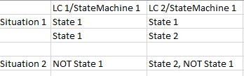

Situation Expression Tables can be exported to Excel by selecting Export Expression Table from the table's context menu. The export will create a timestamped excel file in the project root folder containing a representation of the expression table, where rows that represent State Machines are mapped to columns and Situations are mapped to one or more connected rows, e.g:

is transformed into the following Excel table:

Expressions in a single row are connected via AND for every column, e.g. the first row is read:
State 1 (of LC1/StateMachine 1) AND State 1 (of LC2/StateMachine 1). AND Expressions over States in a Single State Machine are displayed as a comma separated list of States in a single cell, e.g. State2, NOT State 1 is read as State2 AND NOT State 1.
A Situation can span more than one row, and in that case, the rows are connected by boolean OR.